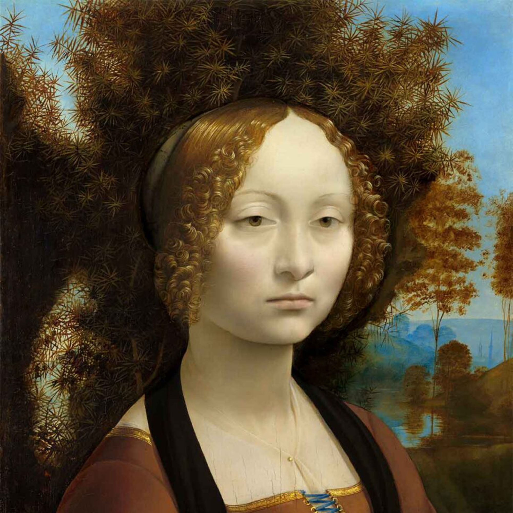
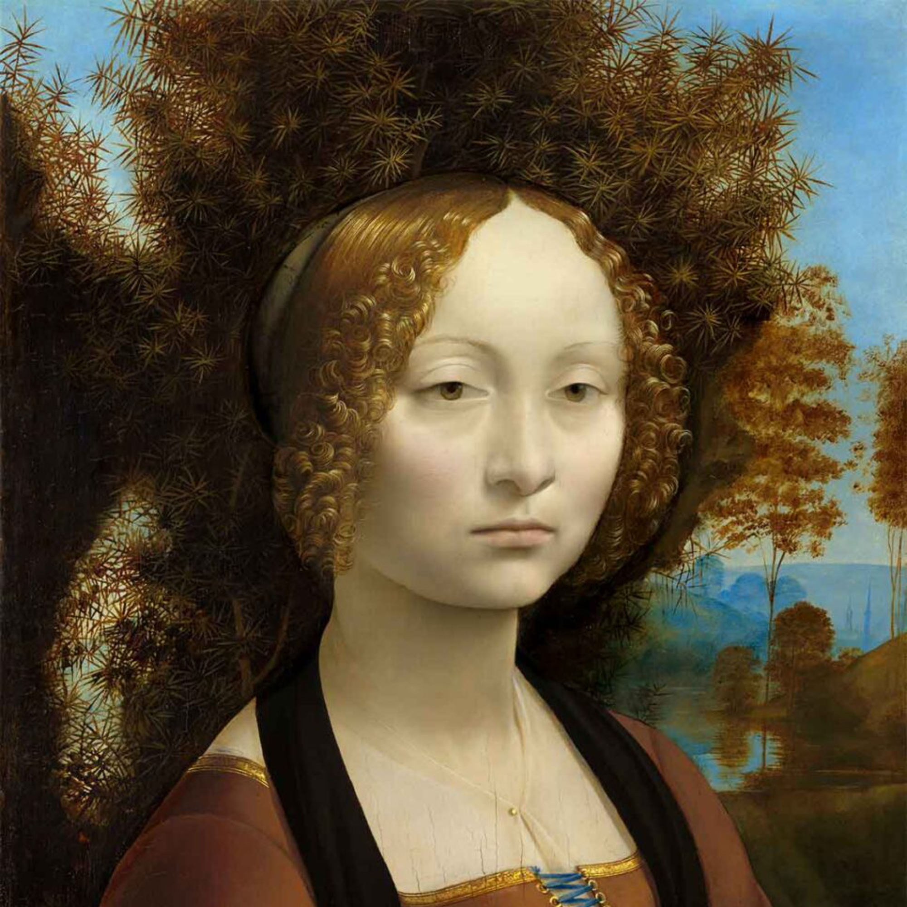
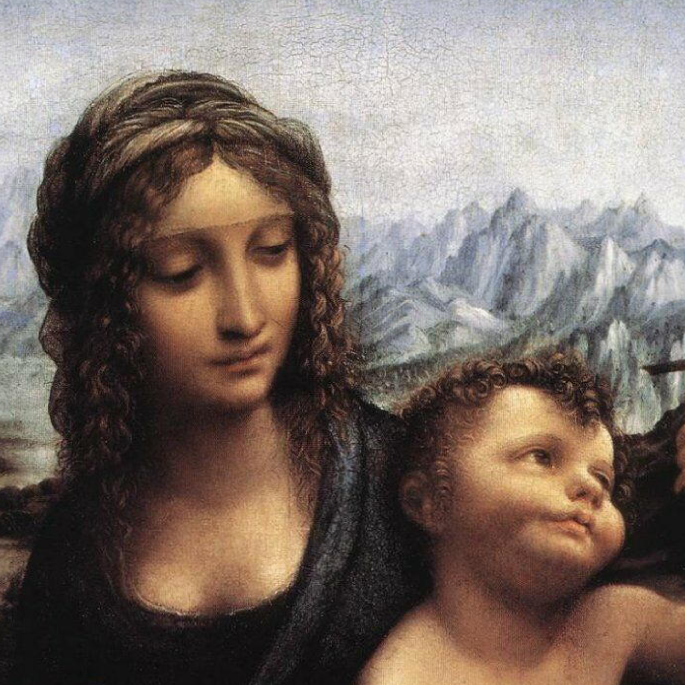
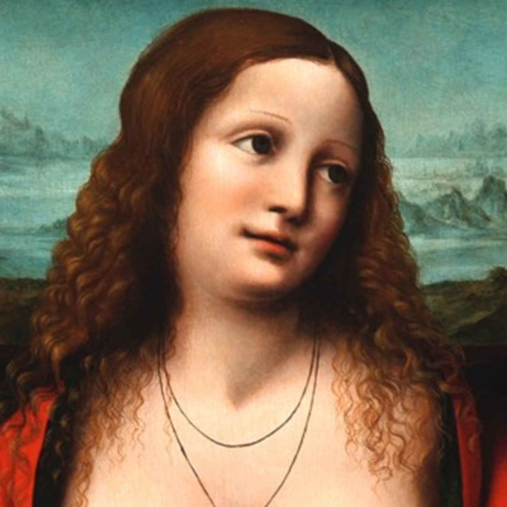
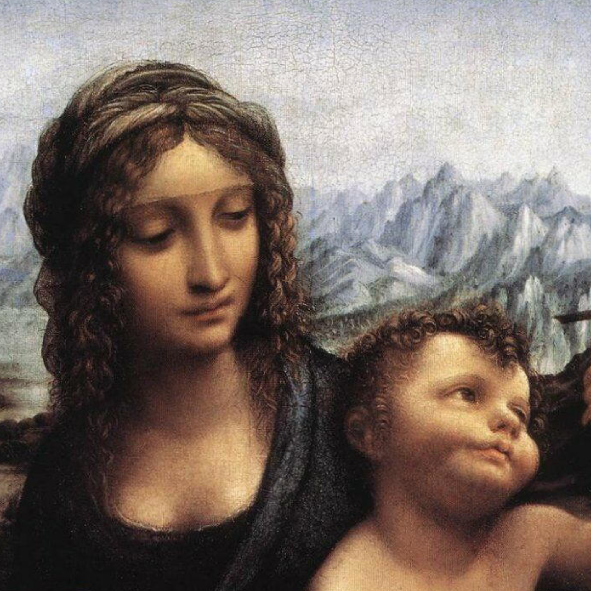
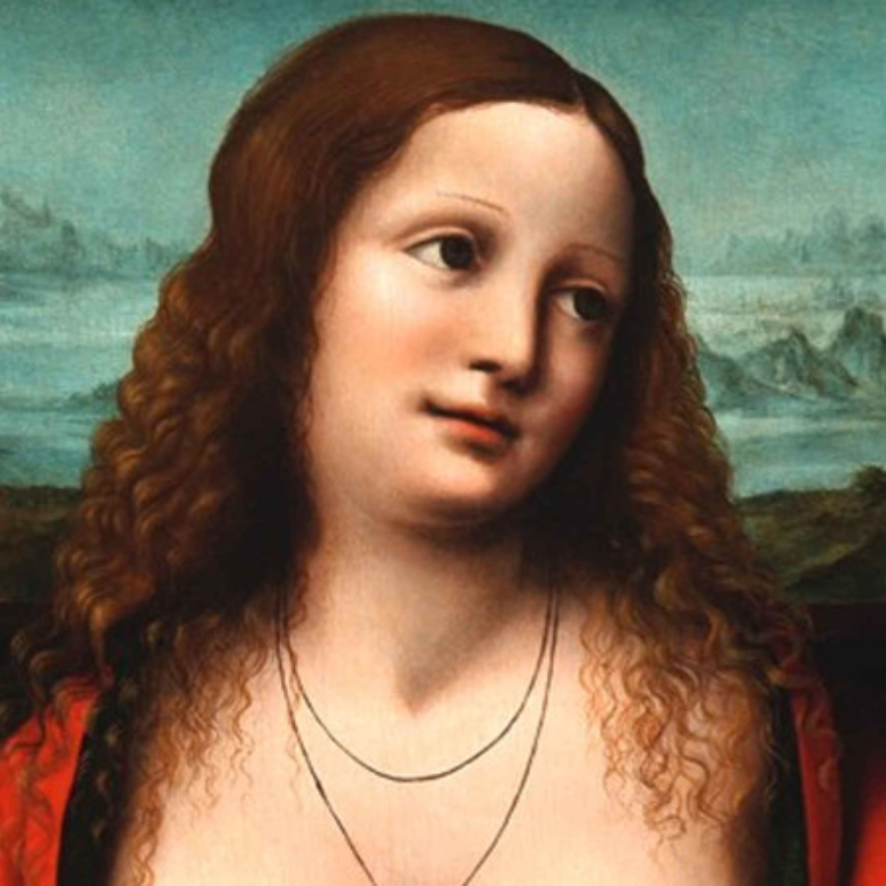

Leonardo Da Vinci
Leonardo di ser Piero da Vinci (Anchiano, 15 aprile 1452 – Amboise, 2 maggio 1519) è stato uno scienziato, inventore e artista italiano.
Firma di Leonardo da Vinci del 1507 Uomo d'ingegno e talento universale del Rinascimento, considerato uno dei più grandi geni dell'umanità, incarnò in pieno lo spirito della sua epoca, portandolo alle maggiori forme di espressione nei più disparati campi dell'arte e della conoscenza: fu infatti scienziato, filosofo, architetto, pittore, scultore, disegnatore, trattatista, scenografo, matematico, anatomista, botanico, musicista, geologo, ingegnere e progettista.
 


 


